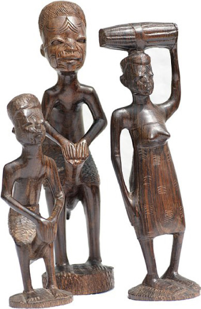

Forms of Makonde sculptures
The Makonde sculptures are created in different styles such as binadamu, shetani, mawingu and ujamaa styles. Details of each style are discussed:
Binadamu style
It was introduced by Nyekenya Nangundu in the 1930s where the sculpture is characterised by naturalistic human figures performing different daily and social activities such as smoking, hunting and performing household chores.
Figure 5.9 shows Makonde Sculpture using the binadamu style.

Figure 5.9: Binadamu style
Source: https://commons.wikimedia.org/wiki/ File: Makonde sculpture. jpg. Retrieved on 26th November 2022

Activity 5.6
Search for more information from various sources including the internet and discuss the difference between a sculpture curved in binadamu style and those household objects you searched in activity 5.5.